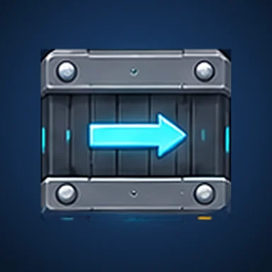

Puzzle
Arrow Conveyor
Tourne les flèches et guide chaque objet vers sa sortie. 60 puzzles malins !
En finitionPolitique de confidentialité


Le jeu
Oriente les tapis roulants, appuie sur START et regarde tes objets filer vers la sortie de leur couleur. Simple à comprendre, de plus en plus malin à résoudre !
START est gratuit : essaie autant de fois que tu veux. Bloqué ? Un indice te montre la tuile à tourner et où la pointer. Finis un niveau avec peu de coups pour décrocher les 3 étoiles.
Gratuit, financé par la publicité. Aucun achat avec de l'argent réel. Aucun compte à créer : ta progression reste sur ton téléphone.
- 60 niveaux de réflexion : cinq mondes qui introduisent pas à pas les croisements, les flèches verrouillées et les cases à traverser.
- Une tête de mort signale les niveaux HARD et SUPER HARD sur la carte. Ils rapportent deux à trois fois plus de pièces.
- Un nouveau puzzle tous les jours et une série à entretenir, une roue et un cadeau quotidiens, et un coffre toutes les 25 étoiles gagnées.
- 10 thèmes (Usine, Néon, Bonbon, Espace, Nature, Antique, Lave, Cyber, Océan, Aurore) et 9 styles d'objets, à débloquer avec les pièces gagnées en jouant.
- Une option ajoute un symbole par couleur (triangle, rond, carré, losange) pour jouer même si les couleurs se ressemblent pour toi.